Etapa 10 • Grupo 2 — telas 03 e 04
Tela 03: as linhas abstratas dão lugar a um corredor japonês tradicional — piso de tábuas escuras polidas, paredes de shoji iluminados por trás entre pilares de madeira, forro de ripas e, ao fundo, quatro portas de correr sob uma bandeira de ripas (ranma), uma para cada dimensão da tela. A porta da cena atual desliza e deixa passar luz quente; na síntese, as quatro estão abertas e a fusão global × local acontece no limiar. Cartões, textos e a composição da fusão permanecem iguais.
Tela 04: o fundo vazio dá lugar a um vestíbulo contemporâneo — concreto polido, brises de madeira clara, parede de reboco com linha de luz baixa e banco, forro de ripas claras — com um pano de vidro aberto para um pequeno jardim interno (cascalho rastelado, pedra e árvore) ao entardecer.
Antes × depois • 1440 × 900
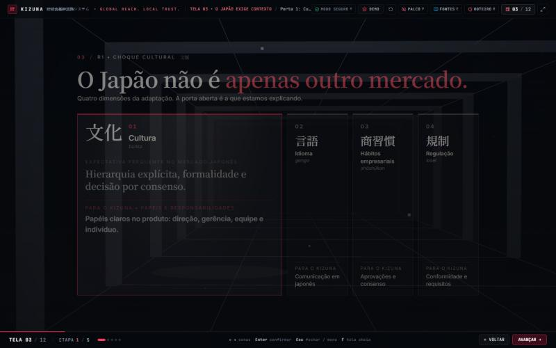
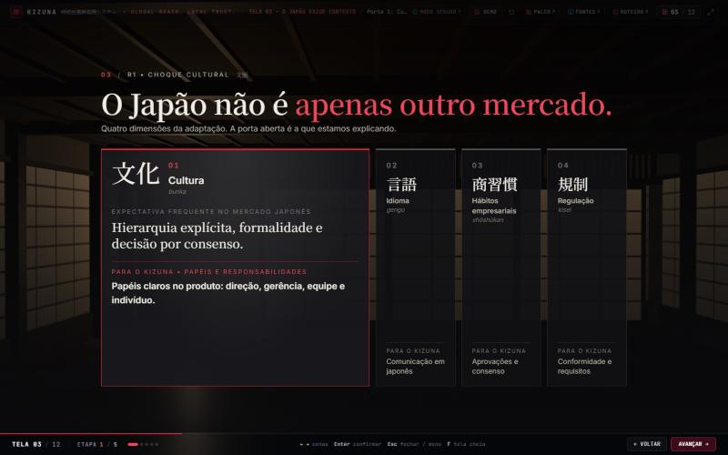
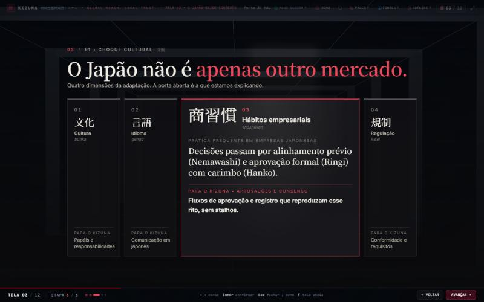
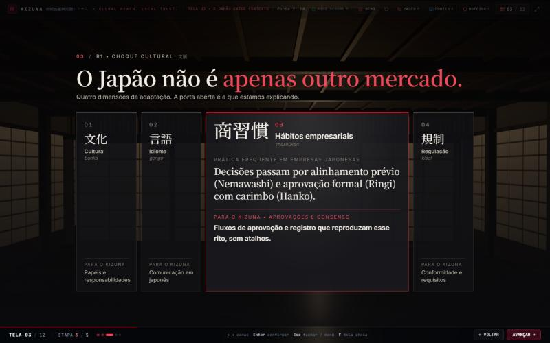
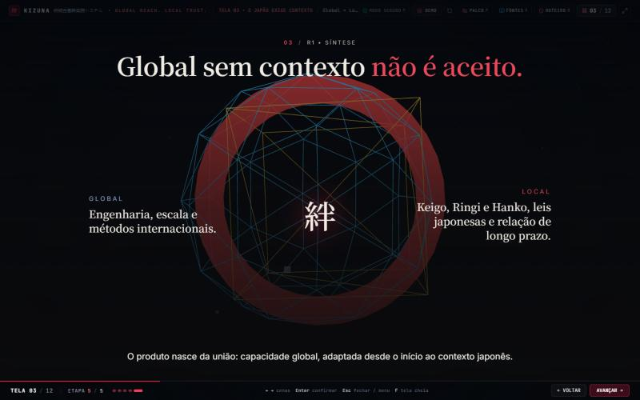
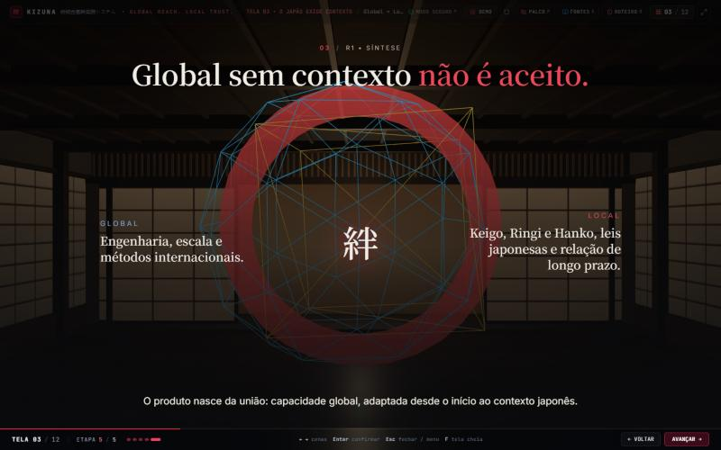
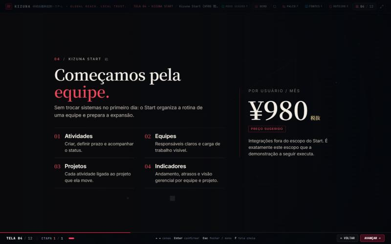
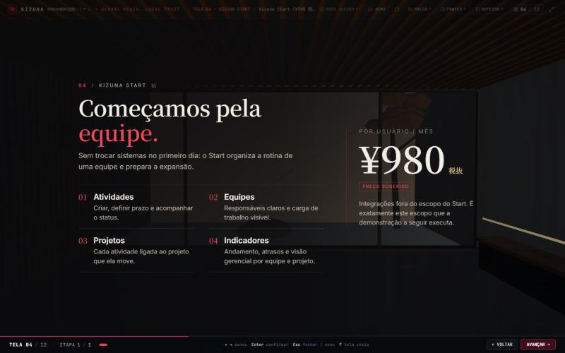
Outras resoluções
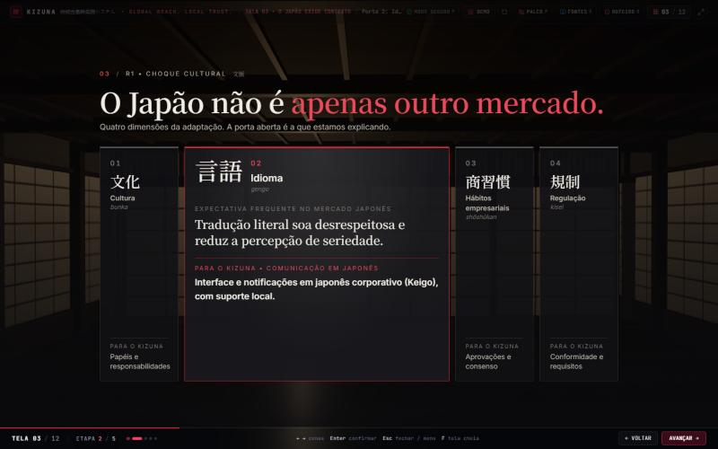
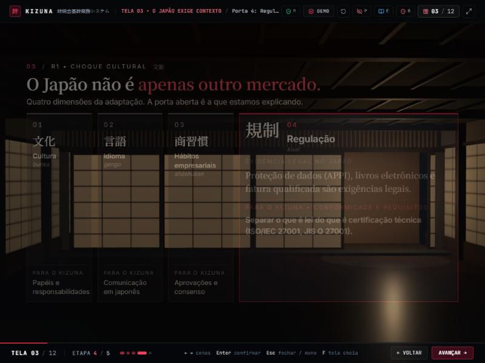
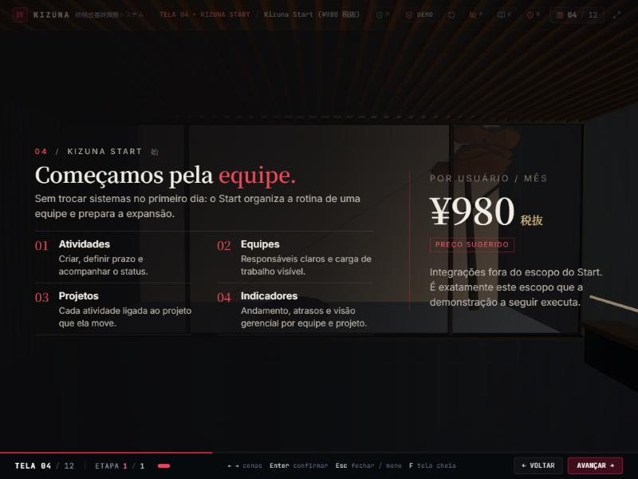
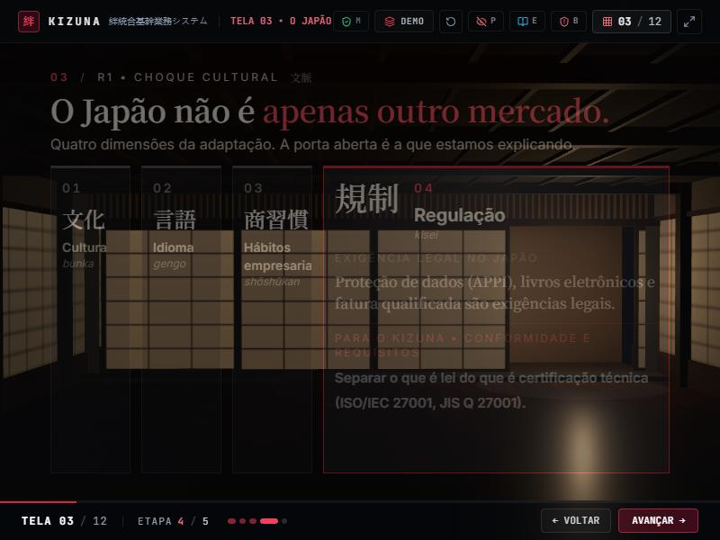
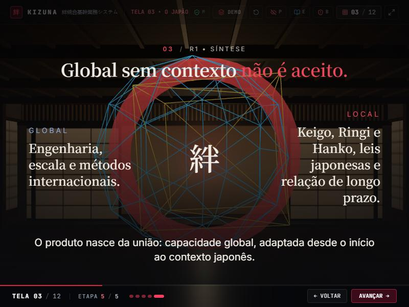
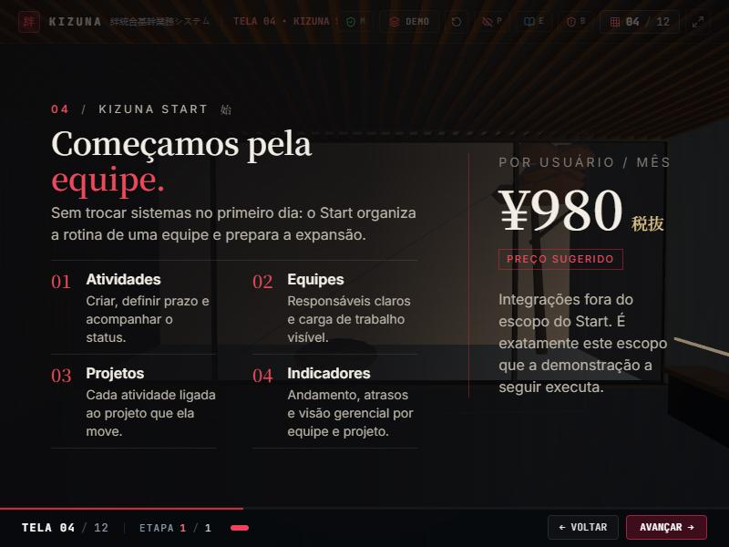